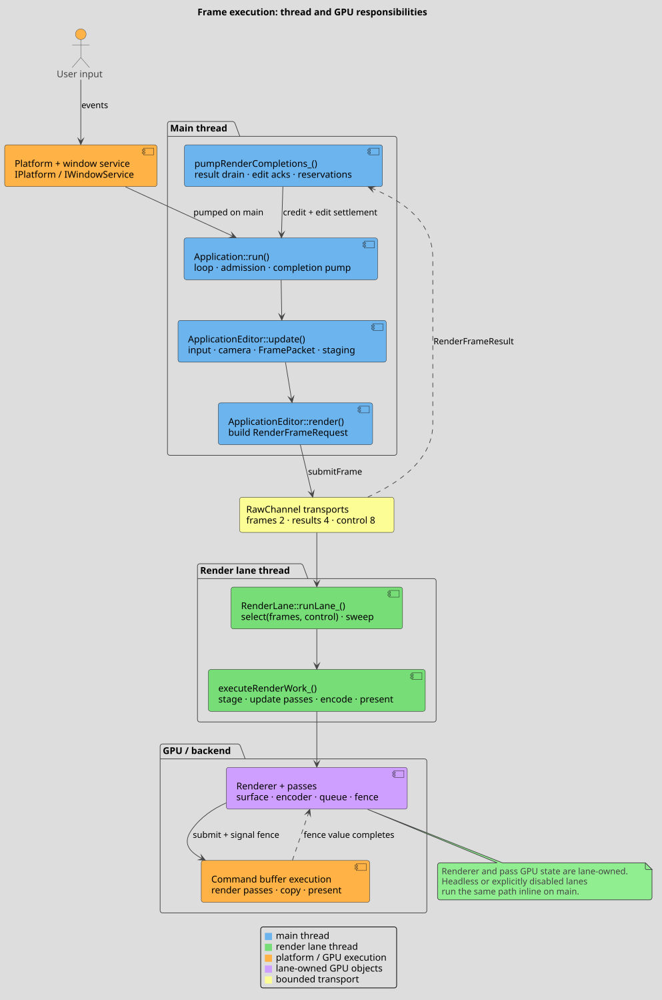
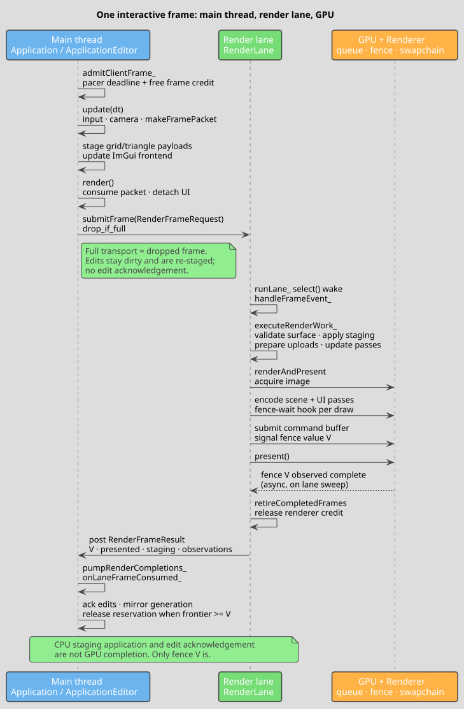
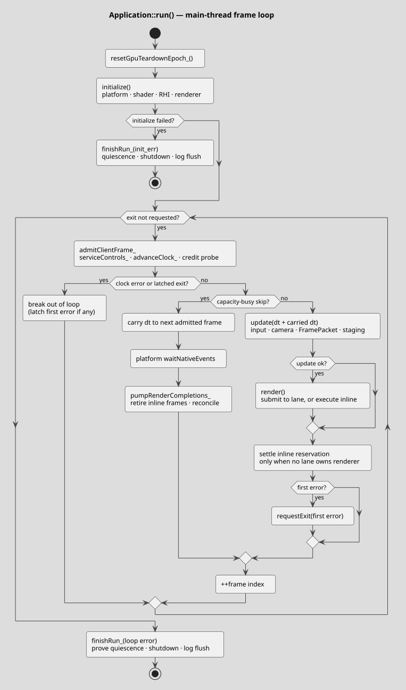
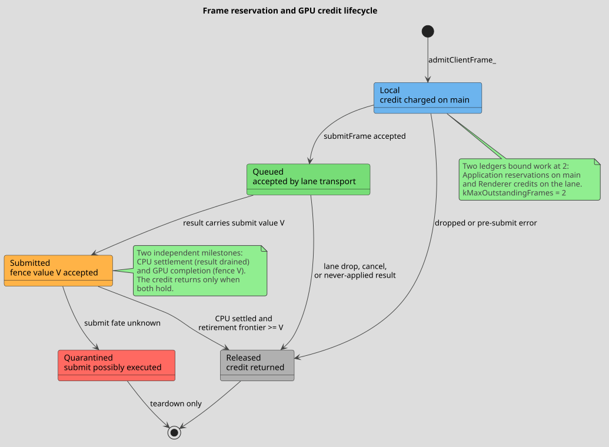
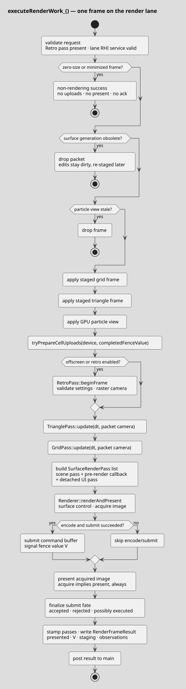
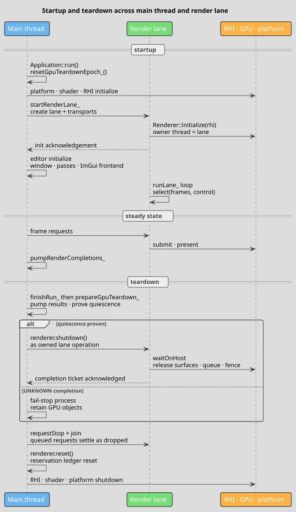
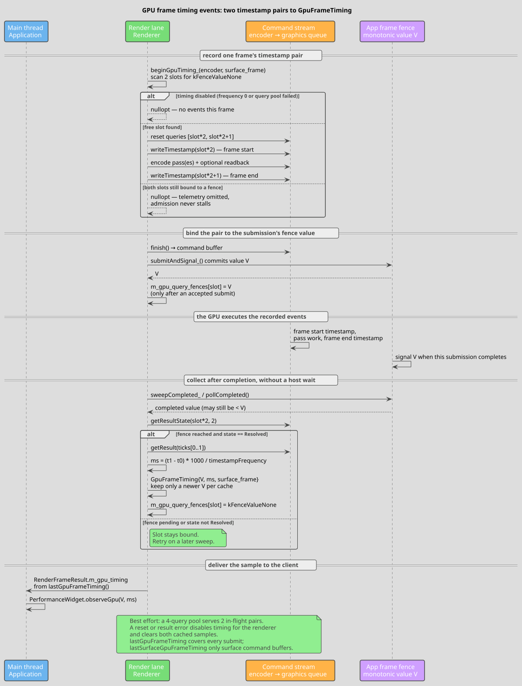
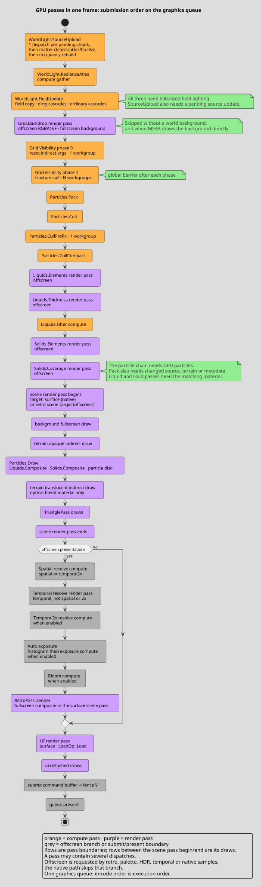

Frame execution: main thread, render lane, GPU
Onboarding diagrams for developers extending the PPR engine. They answer one question: which thread or device executes each part of a frame, and where the hand-offs and completion proofs live.
1. An interactive application does not render on the main thread. Application::run()
admits a frame, runs client update, and hands an owned request to RenderLane.
2. The lane owns the Renderer and pass GPU state. It applies staged payloads,
updates passes from the packet camera, encodes, submits, and presents.
3. A frame result is not GPU completion. GPU completion is the monotonic fence value signalled by the submit; a reservation is released only when CPU settlement and the retirement frontier agree.
- main thread
- render lane / processing
- platform / GPU execution
- lane-owned GPU objects
- bounded transport
- released / optional
- failure / quarantine
01 — Thread and GPU responsibility map

Evidence
game/main.cpp:3-4→runGameentry point.lib/engine/app/App.Application.cpp:91-93— main thread is namedApplication;:1908-1928chooses lane vs inline rendering.lib/engine/app/frame/App.Frame.RenderLane.cpp:174-203— worker thread namedRenderLane;:100-108transport depths.lib/engine/app/renderer/App.Renderer.cpp:1199-1201— renderer operations fail closed off the owner thread.

02 — One interactive frame end to end

Evidence
lib/engine/app/App.Application.cpp:695-846— admission, update, render stages of the main loop.lib/engine/app/App.Application.Editor.cpp:1465-1542— camera update, packet capture, packet consumption;:1784lane submission.lib/engine/app/frame/App.Frame.RenderLane.cpp:303-341—submitFrame;:1059-1160— executor and per-frame sweep.lib/engine/app/renderer/App.Renderer.cpp:1177-1576— surface control, acquire, encode, submit, present.lib/engine/app/App.Application.cpp:1142-1296— result drain and reservation settlement.

03 — Main-thread frame loop and skips

Evidence
lib/engine/app/App.Application.cpp:695-957— loop body, skip branch, exit latch,finishRun_.lib/engine/app/App.Application.cpp:975-1032—admitClientFrame_(clock, credit probe).lib/engine/app/App.Application.cpp:753-820— capacity-busy path.lib/engine/app/App.Application.cpp:1817-1843—finishRun_ordering.

04 — Reservation, fence, and credit lifecycle

Evidence
lib/engine/app/App.Application.cppm:598-615—FrameReservationstates.lib/engine/app/App.Application.cpp:1230-1296— settlement and release rules;:1308-1322— frontier reconcile.lib/engine/app/renderer/App.Renderer.FrameFence.cppm:25-50— two-credit bound and ring depth;:139-156— ledger.lib/engine/app/renderer/App.Renderer.cpp:701-732— one fence value per accepted submit.

05 — What the render lane does with one frame

Evidence
lib/engine/app/App.Application.Editor.cpp:2005-2609—executeRenderWork_.lib/engine/app/App.Application.Editor.cpp:2086-2109— non-rendering and obsolete-surface outcomes.lib/engine/app/App.Application.Editor.cpp:2134-2186— staged application and pass updates.lib/engine/app/App.Application.Editor.cpp:2420-2572— pass list,renderAndPresent, submit-fate finalizer.lib/engine/app/renderer/App.Renderer.cpp:1403-1565— two-phase build/encode, fenced submit, unconditional present.

06 — Startup, quiescence, and teardown

Evidence
lib/engine/app/App.Application.cpp:1845-1933— initialization order;:1445-1535— lane startup and renderer init on the lane.lib/engine/app/App.Application.cpp:1817-1843— quiescence before shutdown.lib/engine/app/App.Application.cpp:1935-2073— renderer shutdown on lane, stop/join, service teardown.lib/engine/app/App.Application.cpp:1537-1600—stopRenderLane_.lib/engine/app/renderer/App.Renderer.cpp:789-796—waitOnHost.

07 — GPU frame timing events

Evidence
lib/engine/app/renderer/App.Renderer.cpp:331-346— telemetry is best effort; a zero timestamp frequency or a failed pool leaves rendering enabled.lib/engine/app/renderer/App.Renderer.cpp:532-554—beginGpuTiming_: free-slot scan, query reset, frame-start timestamp, andnulloptwhen both pairs are pending.lib/engine/app/renderer/App.Renderer.cpp:896-923,:1471-1531— start/end timestamps bracket pass encoding; the slot binds the accepted submit value; producer submits usesurface_frame = false, surface framestrue.lib/engine/app/renderer/App.Renderer.cpp:556-597—collectGpuTimings_: fence gate, nonblockinggetResultState/getResult, tick-to-millisecond conversion, newer-value cache update, slot release.lib/engine/app/renderer/App.Renderer.cppm:77-84—GpuFrameTiming;:430-437— two-slot pool, fences, frequency, surface flags.lib/engine/app/App.Application.Editor.cpp:2028-2033— the result carrieslastGpuFrameTiming();game/Game.Application.cpp:5836-5837— the client observes it.

08 — GPU pass order within one frame

Evidence
lib/engine/app/App.Application.Editor.cpp:2281-2416— frame preparation order: world-light source, atlas and update, thenprepareBackground,prepareGpuVisibility,prepareGpuParticles; the offscreen branch ends inRetroPass::prepareScene.lib/engine/app/App.Application.Editor.cpp:2225-2246— scene draw order: background, terrain opaque, particles, terrain translucent, triangles.lib/engine/app/App.Application.Editor.cpp:2420-2441— surface pass list: scene, then detached UI.lib/engine/app/renderer/App.Renderer.cpp:229-239— a pass'spreparecallback records its compute/offscreen work beforebeginRenderPass;:1466-1530— one encoder and one submit per frame.lib/engine/app/renderer/App.Renderer.GridPass.cpp:3673-3830— backdrop render pass;:3124-3218— two visibility compute phases;:3220-3250— opaque and translucent terrain draws.lib/engine/app/renderer/App.Renderer.GridPass.Particles.cpp:549-825— pack, cull, prefix, compact, then liquid and solid surface preparation;:887-977—Particles.Drawcomposites.lib/engine/app/renderer/App.Renderer.GridPass.Fluids.cpp:127-303,Solids.cpp:96-229— liquid/solid offscreen render passes and the liquid filter compute.lib/engine/app/renderer/App.Renderer.RetroPass.cpp:972-1193— offscreen scene pass and resolve order;:1273-1895— spatial, temporal2x, bloom and auto-exposure passes;:2075— surface composite.

Scope and assumptions
These views describe the interactive desktop path with the render lane enabled, one main window,
and the normal steady-state frame. The inline path is shown only as a note; captures, world-command
transactions, display transactions, and device-loss recovery are out of scope unless they explain a
hand-off. Multi-surface capability is not depicted. Diagram 07 covers the renderer's frame-level
timestamp pair; pass-owned timestamp pools (world light field, grid particle/fluid phases) are separate
instrumentation and do not feed GpuFrameTiming. Diagram 08 follows the interactive
desktop frame; passes that depend on content or settings are annotated in place, and capture-only
work is omitted. Diagrams 01-07 describe the interactive desktop path; the inline (headless) path
runs the same lane work on main.
Content is verified against the cited source at the current revision. No runtime capture, build, or test was performed for this documentation-only change, so timing behavior and visual acceptance in a running build remain unverified here.
Verification
Every diagram was exported to SVG through public Kroki (https://kroki.io, PlantUML
1.2026.9), checked for HTTP 200, image/svg+xml, and a well-formed SVG root,
then rasterized and visually inspected for clipping, overlap, contrast, and flow. The
verification-planning skill was unavailable in this environment; this explicit plan
replaced it.
Rendering backend: public Kroki. The diagram sources left this machine; they contain only engine class names, file paths, and line citations.